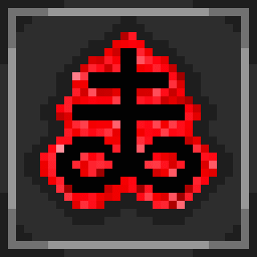

<!DOCTYPE html>
<html lang="en">
<head>
    <meta charset="UTF-8">
    <meta name="viewport" content="width=device-width, initial-scale=1.0">
    <title>Items</title>
    <link rel="stylesheet" href="style.css">
</head>

</html>

<half>
    <h2><b>Brimstone</b></h2>
    Isaac's tears are replaced with a <b>charged blood laser beam</b>. The beam is <b>piercing</b> and <b>spectral</b>, dealing damage to all enemies and ignoring all obstacles in its path.
    The laser deals <b>damage equal to Isaac's damage</b>  and deals damage <b>each tick.</b>
    These ticks occur every 1/15th of a second. <br>



<br>
<h2>Sacred Heart</h2> 
<b>Sacret Heart</b> is a passive item. Here are effects. Grants one Red Heart Container and replenishes all health. <b>x2.3 Damage multiplier. +1 flat Damage.
-0.4 Tears.-0.25 Shot Speed. +0.75 Tear Falling Speed. +4.125 Range.
Grants homing tears. Grants homing bombs. </b><br>


<br><br><a href="index.html"><b>Go back</b></a>

</half>
</html>